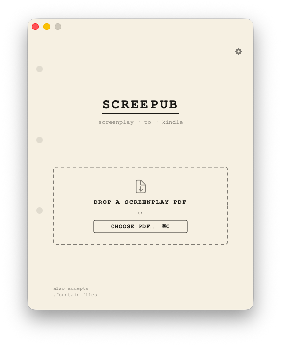

Look before you send

Screenshots mount flat on the page with a hairline shadow, no device bezel and no perspective. The app already looks like a script page, so a frame around it would be a frame around a frame.